07.2 동적 프로그래밍과 정책 평가
동적 프로그래밍(Dynamic Programming, DP)은 환경의 모든 정보(규칙)를 완벽하게 알고 있는 상태에서, 컴퓨터의 반복 연산을 통해 지도의 가치를 안전하고 정밀하게 계산해내는 방식입니다.
마법사 고양이 지니가 칠판 가득 그려준 개념도처럼, 우리가 가진 환경 정보를 어떻게 진짜 가치 지도로 탈바꿈시키는지 7장의 모험을 힘차게 시작해봅시다!
그림 07-2-0 환경 지도를 벨만 방정식으로 처리하여 진짜 가치 지도로 만들어내는 지니와 도로시
이전 장인 6강에서는 벨만 방정식에 대해 배웠습니다.
벨만 방정식을 이용하면 연립방정식을 얻을 수 있고, 그 연립방정식을 풀 수 있다면 가치 함수를 구할 수 있습니다.
이 흐름을 그림으로 표현해보죠.
그림 07-1 벨만 방정식을 이용하여 가치 함수를 구하는 흐름
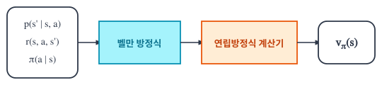
연립방정식
| 이와 같이 상태 전이 확률 p(s’ | s, a), 보상 함수 r(s, a, s’), 정책 π(a | s)라는 세 가지 정보가 있다면 벨만 방정식을 이용해 연립방정식을 구할 수 있습니다. |
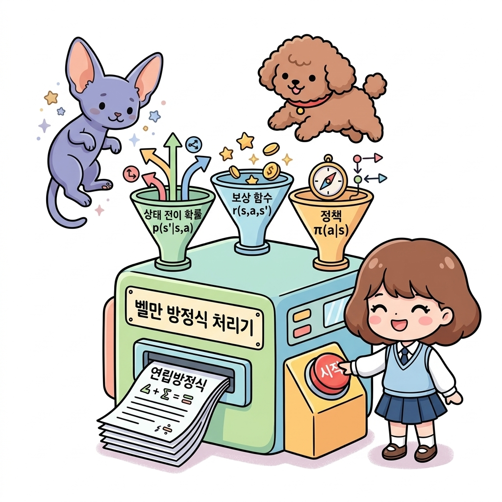
그리고 연립방정식을 푸는 프로그램(연립방정식 계산기)을 사용하여 가치 함수를 구할 수 있습니다.
연립방정식의 한계
하지만 연립방정식을 직접 푸는 방식은 간단한 문제에서만 의미가 있습니다. 상태와 행동 패턴의 수가 조금만 많아져도 감당할 수 없게 되죠.
그래서 등장한 것이 바로 동적 프로그래밍Dynamic Programming (DP) 혹은 동적 계획법입니다.
동적 프로그래밍을 이용하면 상태와 행동의 수가 어느 정도 많아져도 가치 함수를 구할 수 있습니다.
07.2.1 정책 평가와 정책 제어
지금부터 동적 프로그래밍을 파헤쳐봅시다.
강화 학습 문제에서는 종종 두 가지 문제를 해결해야 합니다.
👧 도로시: “지니! 동적 프로그래밍의 진짜 세계로 들어가려면 먼저 해결해야 하는 ‘두 가지 문제’가 있다고? 그 두 가지 문제가 대체 무엇일까?”
🐱 지니: “후후, 도로시! 우리가 강화학습 세상을 정복하기 위해 반드시 넘어야 할 두 개의 거대한 관문이란다. 과연 어떤 비밀이 숨겨져 있을지 함께 살펴볼까?”
🐶 토토: “갸우뚱? 멍멍! 🐾”
그림 07-1a 동적 프로그래밍과 강화 학습에서 마주하게 될 핵심적인 ‘두 가지 문제’의 존재를 새롭게 인지하고 호기심에 가득 찬 눈으로 궁금해하는 도로시와 토토, 그리고 마법 두루마리를 펼쳐 보이는 지니
07.2.1.1 두 가지 문제
바로 정책 평가와 정책 제어입니다.
-
정책 평가policy evaluation는 정책 π가 주어졌을 때 그 정책의 가치 함수 vπ(s) 또는 qπ(s, a)를 구하는 문제입니다.
-
정책 제어policy control는 정책을 조정하여 최적 정책을 만들어내는 것을 말합니다.
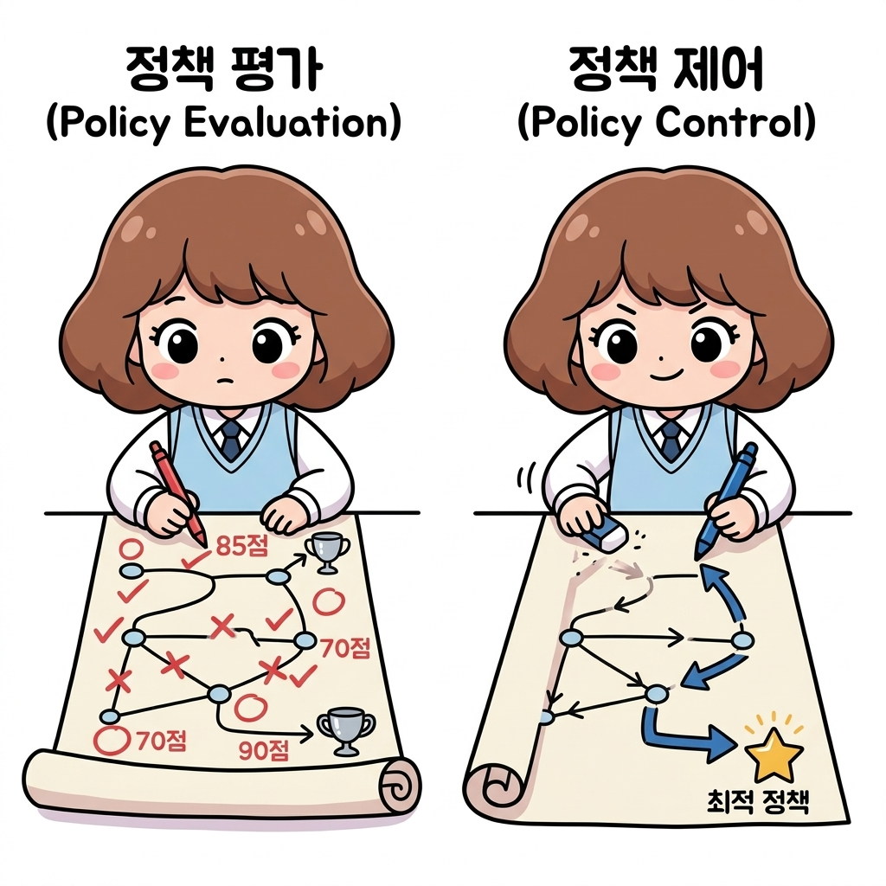
07.2.1.2 강화 학습의 목표
물론 강화 학습의 궁극적인 목표는 정책 제어입니다.
하지만 첫 목표로 정책 평가부터 정복하는 경우가 많습니다.
대부분 문제에서 최적 정책을 직접 구하기는 매우 어렵기 때문이죠.
그래서 이번 절에서는 동적 프로그래밍 알고리즘을 이용한 정책 평가 방법을 살펴보겠습니다.
07.2.2 동적 프로그래밍 기초
동적 프로그래밍(DP)을 활용해 정책을 평가하려면, 6강에서 배운 벨만 방정식을 컴퓨터가 실제로 다룰 수 있는 반복 갱신 규칙(Update Rule)으로 바꾸는 기본 원리를 이해해야 합니다.
👧 도로시: “지니! 연립방정식을 직접 푸는 대신 컴퓨터가 가치를 찾아가게 하려면 어떤 마법의 주춧돌이 필요한 거야?”
🐱 지니: “후후, 도로시! 바로 ‘벨만 갱신식’과 ‘부트스트랩’이라는 두 개의 튼튼한 블록이란다. 어림잡은 가치 추정치를 조금씩 다듬어 진짜 정답 가치로 수렴시키는 DP의 기초를 차근차근 쌓아보자!”
🐶 토토: “신나게 블록 쌓자! 멍멍! 🐾”
그림 07-1b 동적 프로그래밍의 핵심 주춧돌인 ‘벨만 갱신식’과 ‘부트스트랩(반복 갱신)’의 기초 블록을 차근차근 쌓으며 학습 의지를 다지는 도로시와 지니, 토토
07.2.2.1 가치 함수의 정의와 벨만 방정식 복습
앞에서 가치 함수를 다음과 같이 정의했습니다.
\[v_{\pi}(s) = \mathbb{E}_{\pi} [ R_t + \gamma R_{t+1} + \gamma^2 R_{t+2} + \cdots \mid S_t = s ]\][!NOTE] 가치 함수(Value Function)의 정의
가치 함수는 “에이전트가 특정 상태(위치 s)에서 출발하여, 앞으로 주어진 정책(π)을 따라 움직일 때 얻게 될 미래 보상들의 할인된 총합(기댓값)”을 뜻합니다.
즉, 현재 서 있는 위치의 잠재적인 장기 가치를 나타내는 ‘평균 누적 보상 성적표’라고 이해할 수 있습니다.
그림 07-1c 현재 상태 s에서 시작하여 미래에 얻게 될 할인 보상들의 총합(기댓값)인 상태 가치 함수 vπ(s)의 정의를 칠판 앞에서 복습하는 앳된 초등학생 도로시와 요정 고양이 지니, 그리고 반려견 토토
이렇게 무한대가 포함되어 있는 식은 일반적으로 계산할 수 없습니다.
벨만 방정식
하지만 무한대에서 탈출하는 비법이 있으니, 바로 벨만 방정식입니다(식 06.1).
\[v_{\pi}(s) = \sum_{a, s'} \pi(a \mid s) p(s' \mid s, a) \{ r(s, a, s') + \gamma v_{\pi}(s') \}\][식 07.1]
현재 상태와 다음상태 관계
벨만 방정식은 [식 07.1]과 같이 ‘현재 상태 s의 가치 함수 vπ(s)’와 ‘다음 상태 s’의 가치 함수 vπ(s’)’의 관계를 나타냅니다.
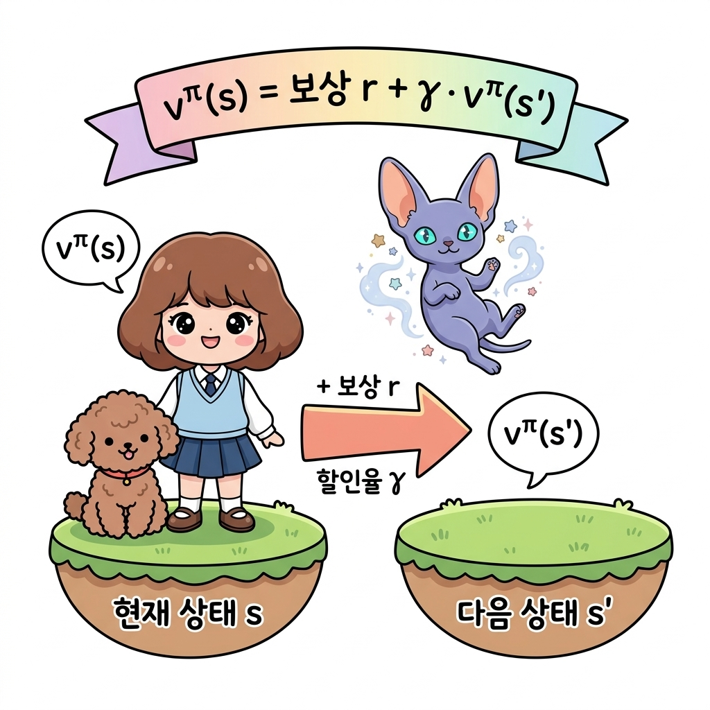
07.2.2.2 벨만 방정식을 이용한 가치 함수 갱신식
벨만 방정식은 많은 강화 학습 알고리즘에 중요한 기초를 제공합니다. DP를 사용한 방법도 벨만 방정식에서 파생되죠.
바로 벨만 방정식을 ‘갱신식’으로 변형하는 것입니다.
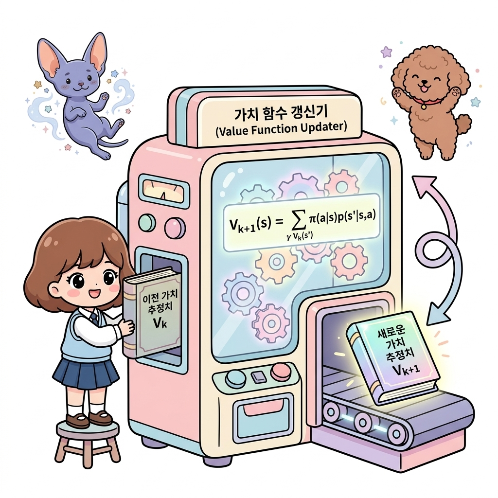
수식은 다음과 같습니다.
\[V_{k+1}(s) = \sum_{a, s'} \pi(a \mid s) p(s' \mid s, a) \{ r(s, a, s') + \gamma V_k(s') \}\][식 07.2]
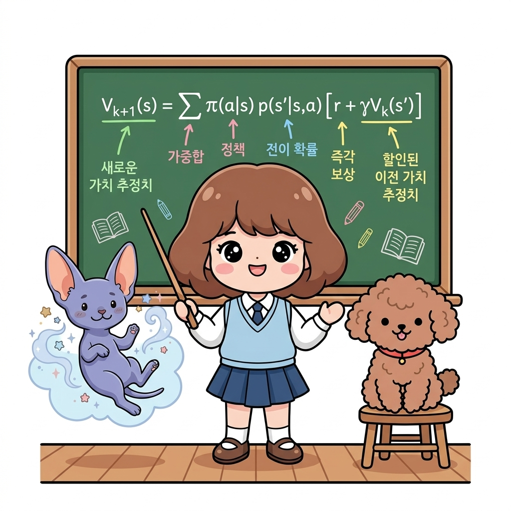
07.2.2.3 가치 함수의 추정치 표기 (V_k)
Vk+1(s)는 k+1번째로 갱신된 가치 함수를 뜻하며 k번째로 갱신된 가치 함수는 Vk(s)로 표기합니다.
이때 Vk+1(s)와 Vk(s)는 ‘추정치’라서 실제 가치 함수인 v(s)와 다릅니다.
그래서 대문자 V로 표기합니다.
추정이란? (Estimation)
강화학습과 동적 프로그래밍에서 ‘참값(True Value)’은 우리가 최종적으로 알고 싶어 하는 수학적으로 완벽한 진짜 정답입니다. 하지만 학습 초기에는 이 진짜 값을 알 방법이 없습니다.
그래서 일단 임의의 값(예: 모든 방의 가치를 0점)으로 시작하여, 벨만 갱신식을 반복적으로 실행하면서 정답에 가깝도록 계속 값을 변경해 나갑니다. 이처럼 ‘진짜 정답에 한 걸음씩 가깝게 다가가도록 어림잡아 짐작해 나가는 미완성의 값’을 추정치(Estimate)라고 부릅니다.
수학 기호로 표기할 때도 엄격하게 구분합니다:
- 소문자 vπ(s): 우리가 도달해야 하는 이론상의 고정된 진짜 정답 (참값)
- 대문자 Vk(s): 컴퓨터 메모리에 저장되어 반복 갱신을 거치며 계속 다듬어지고 변해가는 짐작값 (추정치)
07.2.2.4 추정치로 추정치를 개선하는 부트스트랩
[식 07.2]의 특징은 한 단계 앞선 ‘다음 상태의 가치 함수 Vk(s’)’의 값들을 이용(대입)하여, 지금 위치한 ‘지금 상태의 가치 함수 Vk+1(s)’를 갱신한다는 점입니다. (미래의 추정 가치를 끌어와 현재의 추정 가치를 정밀하게 고쳐 씁니다.)
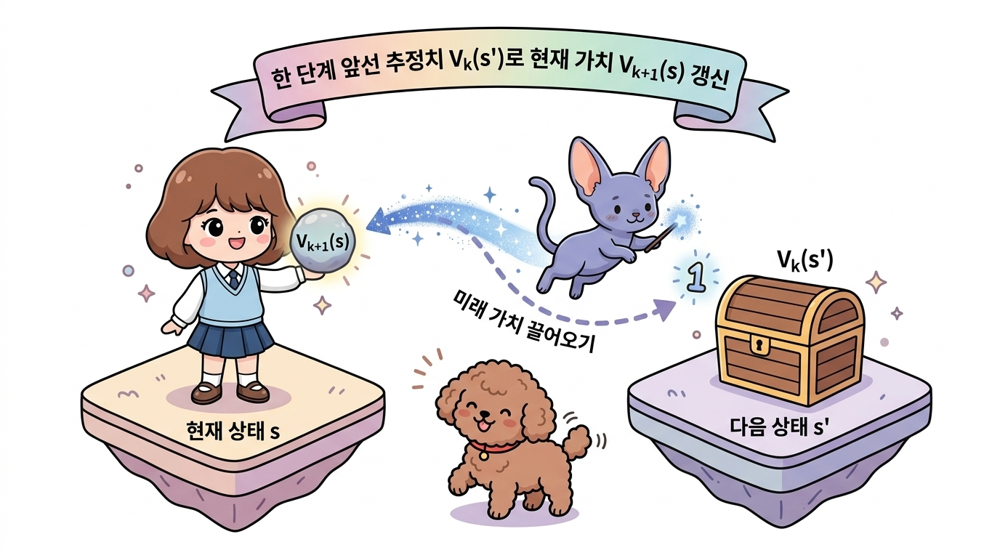
부트스트랩 과정
그리고 이 식은 ‘추정치 Vk(s’)’를 사용하여 ‘또 다른 추정치 Vk+1(s)’를 개선합니다.
이처럼 추정치를 사용하여 추정치를 개선하는 과정을 부트스트랩bootstrapping이라고 부릅니다.
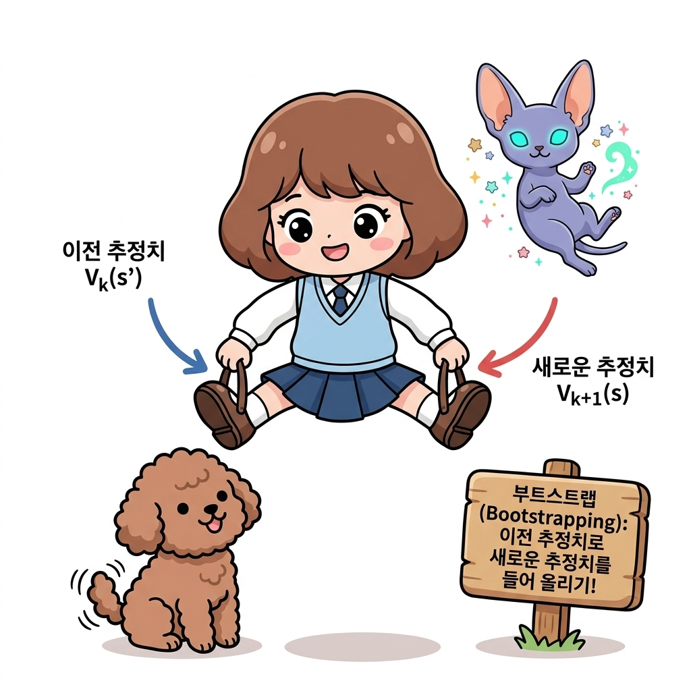
NOTE_ 부트스트랩은 신발(boot)을 신을 때 손가락으로 잡아당기는, 신발 뒤쪽에 달려 있는 고리 모양의 끈(strap)을 가리킵니다. 여기서 유래하여 다른 사람의 도움 없이 스스로 개선하는 과정을 뜻하는 의미로 쓰이고 있습니다.
07.2.2.5 반복적 정책 평가 알고리즘
이제 DP를 이용한 구체적인 알고리즘을 설명하겠습니다.
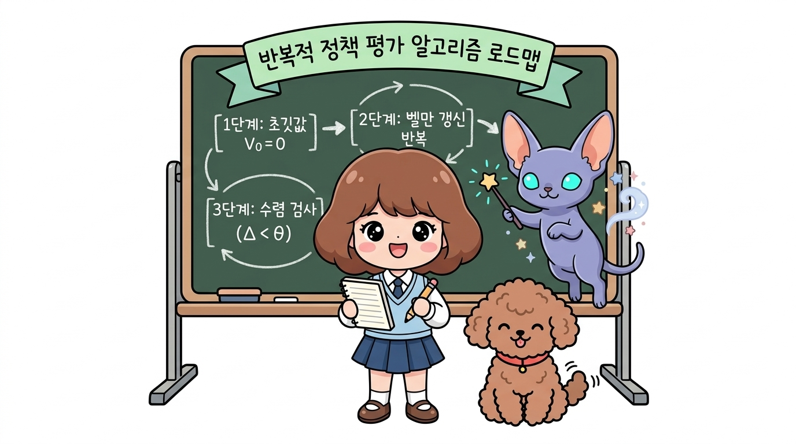
먼저 V0(s)의 초깃값을 설정합니다.
예를 들어 모든 상태에서 V0(s) = 0으로 초기화합니다.
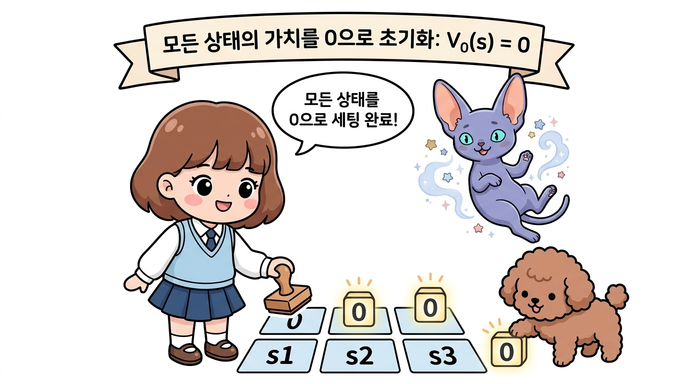
그리고 [식 07.2]를 이용하여 V0(s)에서 V1(s)로 갱신합니다.
이어서 V1(s)를 기반으로 V2(s)로 갱신합니다. 이 일을 반복하다 보면 최종 목표인 Vπ(s)에 가까워집니다.
이 알고리즘을 반복적 정책 평가iterative policy evaluation라고 합니다.
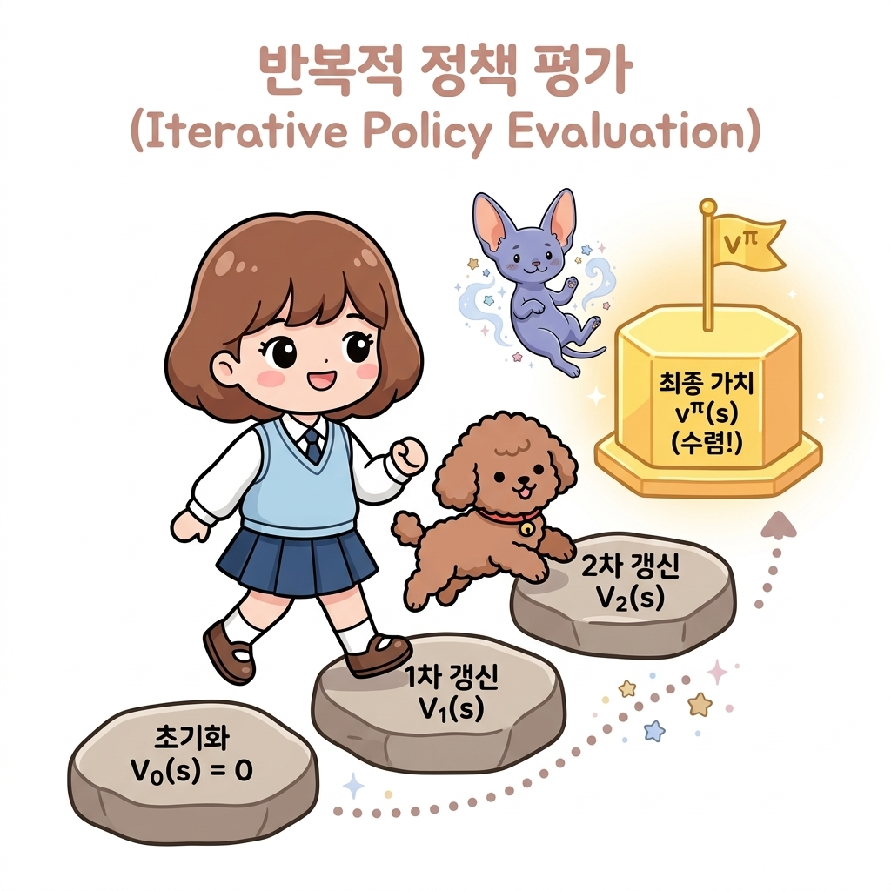
갱신횟수
반복적 정책 평가 알고리즘을 실제 문제에 적용하려면 반복되는 갱신을 언젠가는 멈춰야 합니다.
이때 갱신 횟수를 결정하는 기준으로 갱신된 양을 이용할 수 있습니다.
이에 관한 예는 바로 뒤에서 설명할 것입니다.
가치함수 수렴
[식 07.2]에 따른 갱신을 반복하면 초기 가치 추정치 V0(s)가 어떤 엉뚱한 값으로 시작하더라도, 결국 최종 목표인 참 가치 함수 vπ(s)에 정확히 수렴한다는 사실은 수학적으로 이미 증명되어 있습니다.
이를 보장하기 위해 만족해야 하는 핵심 조건은 다음과 같습니다.
- 할인율 γ < 1: 할인율이 1보다 작으면 갱신을 거듭할 때마다 참값과의 오차(차이)가 매 단계마다 최소 γ배(예: 0.9배) 이하로 줄어듭니다(수축 사상, Contraction Mapping).
- 유한한 상태 및 행동 공간: 에이전트가 탐색할 상태(방)와 취할 수 있는 행동(선택지)의 개수가 끝없이 많지 않고 유한해야 합니다.
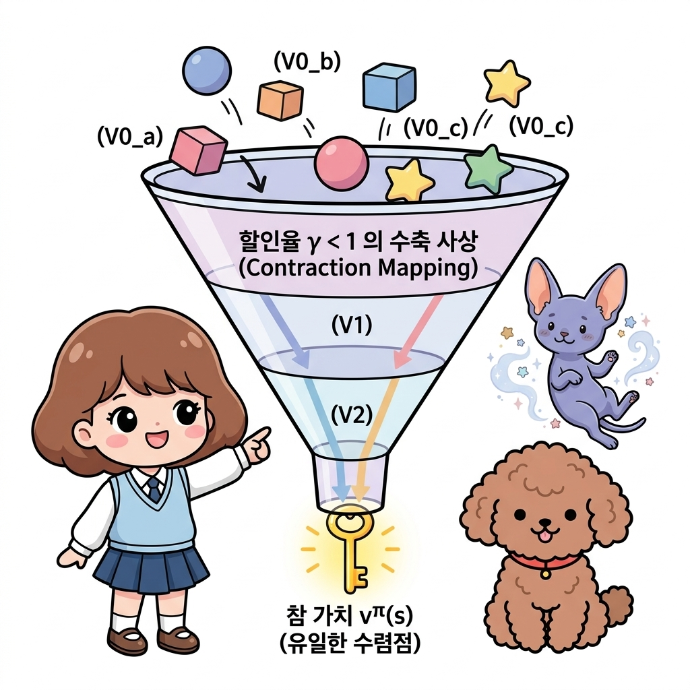
상태 L1에서의 1차 가치 갱신 (V1(L1))
그림과 같이 각 상태에서 출발하여 취할 수 있는 행동은 왼쪽(확률 0.5)과 오른쪽(확률 0.5) 두 가지입니다.
우선 상태 L1에서의 1차 가치 갱신 V1(L1)을 왼쪽 행동과 오른쪽 행동으로 분리하여 차근차근 계산해보겠습니다.
1. 왼쪽으로 이동하는 경우 (확률 0.5)
- 상황: 도로시가 왼쪽으로 한 걸음 내딛지만, 왼쪽 외벽에 가로막혀 쿵! 부딪히며 제자리 L1 상태에 그대로 머무릅니다.
- 보상: 벽에 부딪혔으므로 페널티인 보상 -1을 받습니다 (r = -1).
- 다음 상태의 가치: 도착한 다음 상태가 여전히 L1이므로, 우변에 대입할 이전 가치는 초깃값 V0(L1) = 0이 됩니다.
- 왼쪽 경로의 가치 기여분: \(\pi(\text{left} \mid L1) \times \left\{ r + \gamma V_0(L1) \right\} = 0.5 \times \{ -1 + 0.9 \times 0 \} = -0.5\)
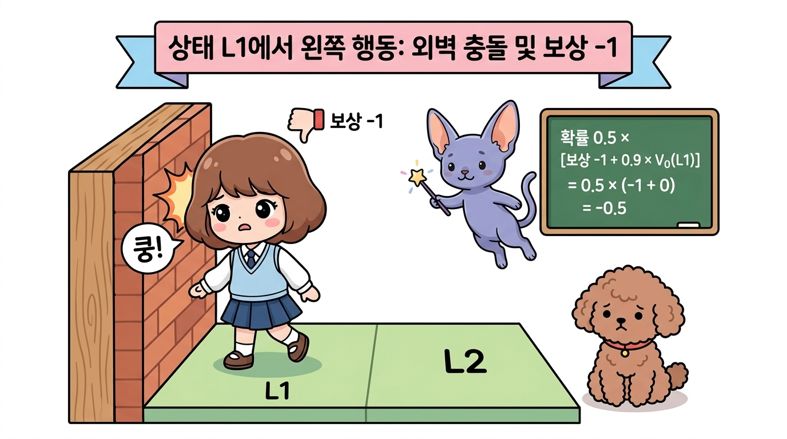
2. 오른쪽으로 이동하는 경우 (확률 0.5)
- 상황: 도로시가 오른쪽으로 경쾌하게 발걸음을 옮겨 옆 칸인 L2 상태로 전진하는 데 성공합니다.
- 보상: 오른쪽으로 안전하게 전진했으므로 보너스인 보상 +1을 기분 좋게 획득합니다 (r = +1).
- 다음 상태의 가치: 도착한 다음 상태가 L2이므로, 우변에 대입할 이전 가치는 초깃값 V0(L2) = 0이 됩니다.
- 오른쪽 경로의 가치 기여분: \(\pi(\text{right} \mid L1) \times \left\{ r + \gamma V_0(L2) \right\} = 0.5 \times \{ +1 + 0.9 \times 0 \} = +0.5\)
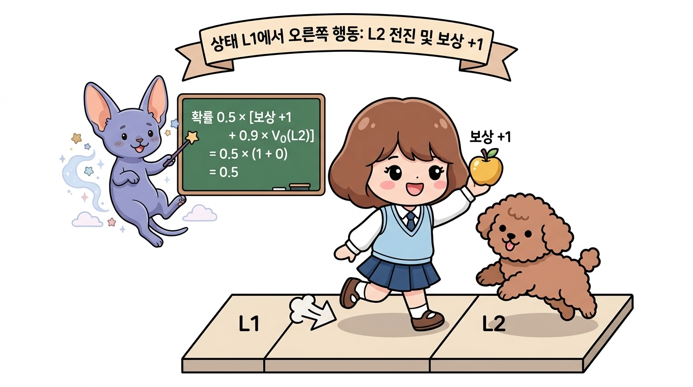
3. L1 가치 함수 합산 결과
왼쪽과 오른쪽 두 갈래 행동에서 얻은 가치 기여분(-0.5와 +0.5)을 벨만 갱신식에 따라 가중합(기댓값)으로 합산하면 최종적으로 갱신된 V1(L1)이 도출됩니다.
\[\begin{aligned} V_1(L1) &= \sum_{a} \pi(a \mid L1) \left\{ r(L1, a, s') + \gamma V_0(s') \right\} \\ &= 0.5 \{ -1 + 0.9 V_0(L1) \} + 0.5 \{ 1 + 0.9 V_0(L2) \} \\ &= 0.5 \cdot (-1 + 0.9 \cdot 0) + 0.5 \cdot (1 + 0.9 \cdot 0) \\ &= -0.5 + 0.5 \\ &= 0 \end{aligned}\]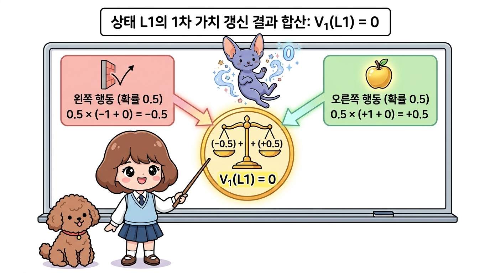
상태 L2에서의 1차 가치 갱신 (V1(L2))
동일한 방법으로 상태 L2에서의 1차 가치 갱신 V1(L2)도 왼쪽 행동과 오른쪽 행동으로 분리하여 차근차근 계산해보겠습니다.
1. 왼쪽으로 이동하는 경우 (확률 0.5)
- 상황: 도로시가 상태 L2에서 왼쪽으로 발걸음을 옮겨 이전 칸인 L1 상태로 이동합니다.
- 보상: 왼쪽으로 이동할 때는 보상이 주어지지 않으므로 보상 0을 받습니다 (r = 0).
- 다음 상태의 가치: 도착한 다음 상태가 L1이므로, 우변에 대입할 이전 가치는 초깃값 V0(L1) = 0이 됩니다.
- 왼쪽 경로의 가치 기여분: \(\pi(\text{left} \mid L2) \times \left\{ r + \gamma V_0(L1) \right\} = 0.5 \times \{ 0 + 0.9 \times 0 \} = 0\)
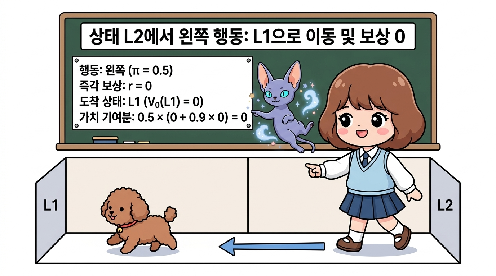
2. 오른쪽으로 이동하는 경우 (확률 0.5)
- 상황: 도로시가 오른쪽으로 이동을 시도하지만, 오른쪽 외벽에 가로막혀 쿵! 부딪히며 제자리 L2 상태에 그대로 머무릅니다.
- 보상: 외벽에 부딪혔으므로 페널티인 벌점 보상 -1을 받습니다 (r = -1).
- 다음 상태의 가치: 도착한 다음 상태가 여전히 L2이므로, 우변에 대입할 이전 가치는 초깃값 V0(L2) = 0이 됩니다.
- 오른쪽 경로의 가치 기여분: \(\pi(\text{right} \mid L2) \times \left\{ r + \gamma V_0(L2) \right\} = 0.5 \times \{ -1 + 0.9 \times 0 \} = -0.5\)
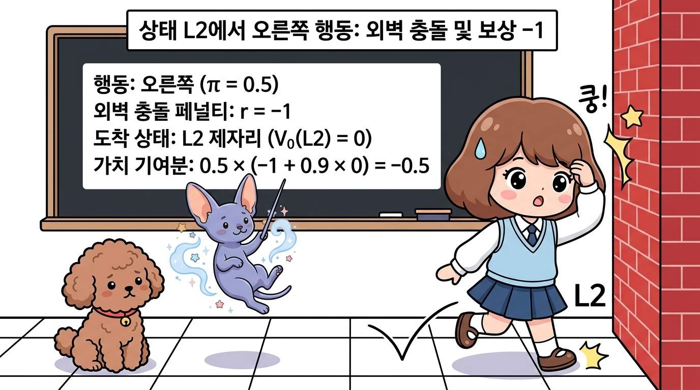
3. L2 가치 함수 합산 결과
왼쪽과 오른쪽 두 갈래 행동에서 얻은 가치 기여분(0과 -0.5)을 벨만 갱신식에 따라 가중합(기댓값)으로 합산하면 최종적으로 갱신된 V1(L2)이 도출됩니다.
\[\begin{aligned} V_1(L2) &= \sum_{a} \pi(a \mid L2) \left\{ r(L2, a, s') + \gamma V_0(s') \right\} \\ &= 0.5 \{ 0 + 0.9 V_0(L1) \} + 0.5 \{ -1 + 0.9 V_0(L2) \} \\ &= 0.5 \cdot (0 + 0.9 \cdot 0) + 0.5 \cdot (-1 + 0.9 \cdot 0) \\ &= 0 + (-0.5) \\ &= -0.5 \end{aligned}\]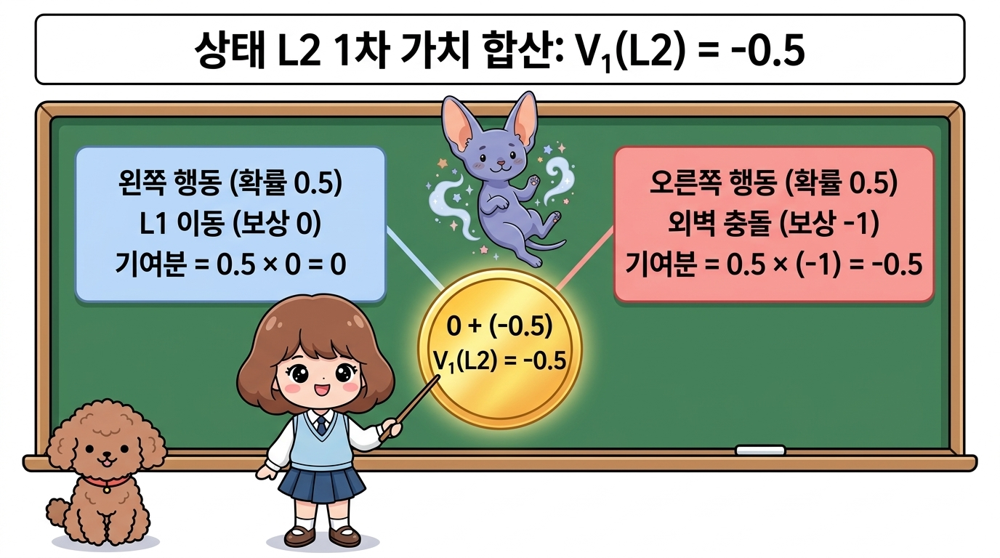
이 모든 연산 과정을 일목요연하게 칠판 판서 형태로 요약한 그림이 바로 아래의 그림 07-4.1입니다.
수식이 복잡해 보여도 결국 각 방향으로 이동하면서 얻는 보상과 정책 확률의 단순한 곱하기와 더하기에 지나지 않습니다.
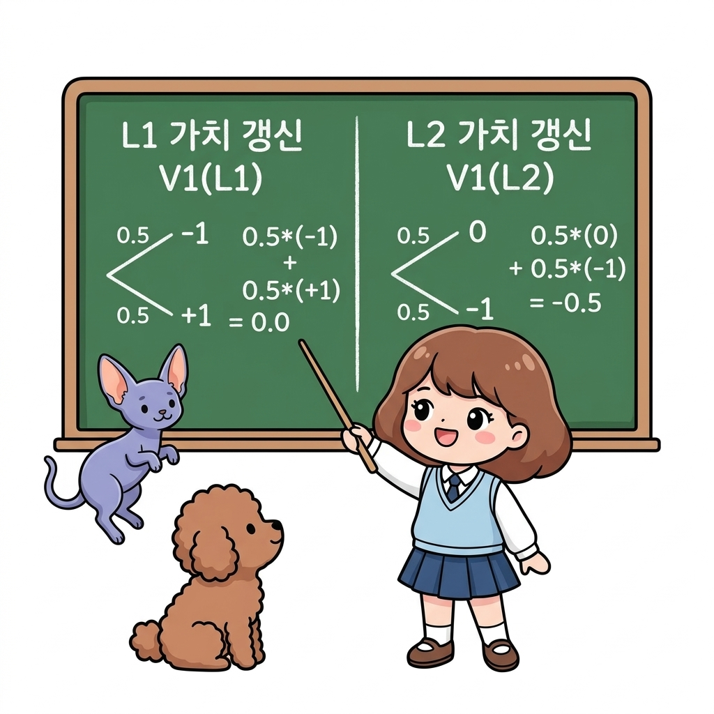
이것으로 모든 상태에 대한 1차 가치 함수 갱신이 끝났습니다(이번 문제는 상태가 L1, L2 총 2개뿐입니다).
수학적 수렴 증명에 대해 더 자세히 알고 싶다면 다른 문헌[5]을 참고하기 바랍니다.
동적 프로그래밍(DP)은 특정한 성격을 지닌 알고리즘들의 총칭입니다.
대상 문제를 작은 문제로 나누어 답을 구하는 기법 전반을 말하죠. DP의 핵심은 ‘같은 계산을 두 번 하지 않는 것’입니다.
구현하는 방법에는 하향식top-down과 상향식bottom-up이 있습니다(하향식 방법은 메모이제이션memoization이라고도 합니다.
앞서 설명한 V0(s), V1(s)… 식으로 한 단계씩 증가하며 가치 함수를 갱신하는 방식은 상향식 방법입니다).
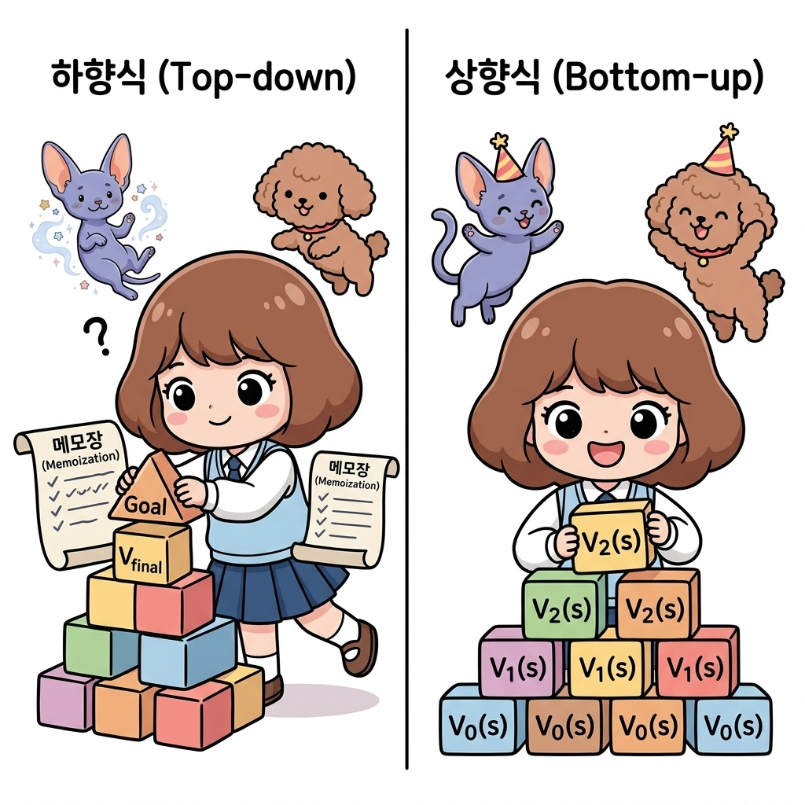
07.2.3 반복적 정책 평가 구현 (1) - 2개 딕셔너리 방식
이제 앞서 이론과 손계산으로 익힌 반복적 정책 평가(Iterative Policy Evaluation) 알고리즘을 파이썬 코드로 직접 구현해볼 차례입니다.
알고리즘을 코드로 옮길 때 가장 먼저 결정해야 하는 중요한 문제는 “이전 가치 Vk와 새롭게 계산되는 가치 Vk+1을 메모리 상에서 어떻게 관리할 것인가?”입니다.
벨만 갱신식의 수학적 정의에 따르면, 모든 상태의 새로운 가치 Vk+1(s)를 계산할 때는 우변에 대입되는 다음 상태들의 가치가 반드시 “동일한 이전 단계 k 시점의 가치 Vk(*s’)”이어야 합니다. 계산 도중에 기존 딕셔너리의 값을 곧바로 덮어써 버리면, 아직 갱신되지 않은 다른 상태가 방금 갱신된 새로운 값을 읽어버리는 계산 오염(동기화 불일치)이 발생할 수 있습니다.
따라서 가장 직관적이고 수학적으로 엄밀한 첫 번째 구현 방식은 “이전 단계의 가치 Vk를 오직 읽기만 하는 딕셔너리(V)”와 “새롭게 계산된 Vk+1을 차곡차곡 기록하는 딕셔너리(new_V)”의 2개 딕셔너리를 분리하여 사용하는 방식입니다.
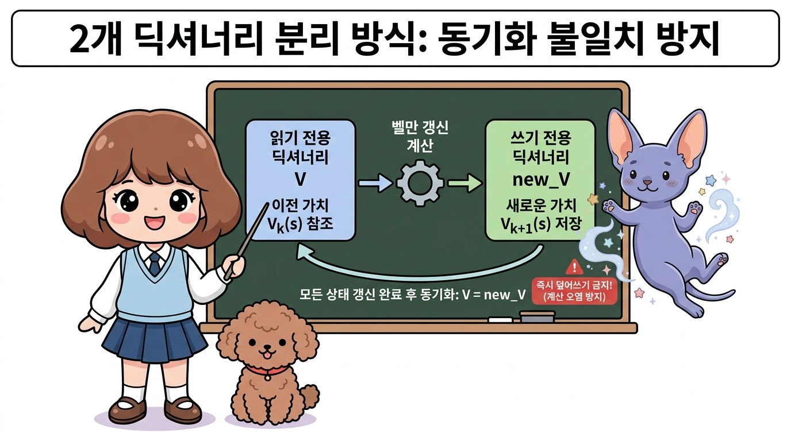
우리가 첫 번째 실습 예제로 다룰 [그림 07-2]의 ‘두 칸짜리 그리드 월드’ 환경을 다시 한번 명확히 정의해보겠습니다.
그림 07-2 두 칸짜리 그리드 월드 환경과 에이전트의 균등 무작위 정책 π
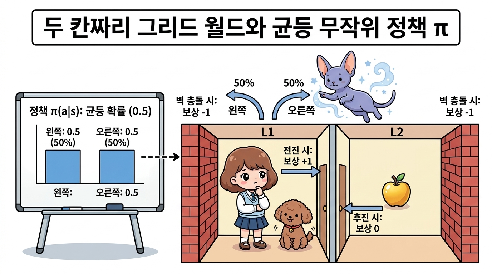
그림에서와 같이 에이전트(도로시)가 처한 환경 규칙과 행동 정책은 다음과 같이 아주 단순하고 명쾌합니다.
- 2칸 격자 세계 (Grid World): 방은 오직 L1과 L2 두 개뿐입니다.
- 외벽 충돌 페널티: L1의 왼쪽 끝과 L2의 오른쪽 끝은 단단한 벽으로 가로막혀 있어, 밖으로 나가려 하면 쿵! 부딪혀 제자리에 머무르고 벌점 -1을 받습니다.
- 방 간의 이동: L1에서 오른쪽으로 이동해 L2에 도달하면 탐스러운 황금 사과 보상 +1을 얻습니다. 반대로 L2에서 왼쪽으로 되돌아올 때는 별도의 보상 없이 보상 0을 얻습니다.
- 균등 무작위 정책 (π): 도로시는 동전을 던지듯 왼쪽과 오른쪽 행동을 각각 0.5(50%)의 동일한 확률로 선택합니다. \(\pi(\text{left} \mid s) = 0.5, \quad \pi(\text{right} \mid s) = 0.5 \quad (\forall s \in \{L1, L2\})\)
07.2.3.1 결정적 상태 전이 환경으로의 제약
결정적 상태 전이란, 에이전트가 어떤 상태 s에서 특정 행동 a를 취했을 때 바람이나 무작위성 같은 외부 변수가 개입하지 않도록 제한하여, 100%의 확률(확률 = 1.0)로 정해진 다음 상태 s’에 정확히 도착하게 만드는 것을 의미합니다.
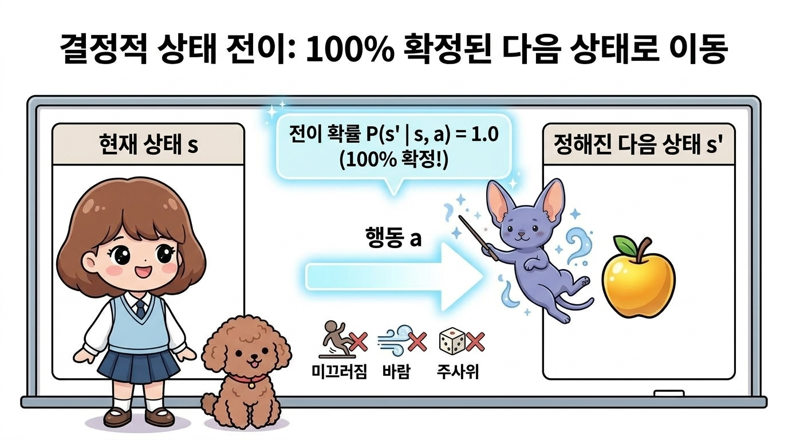
💡 상태 전이를 왜 결정적인 경우로 한정(제한)하여 문제를 풀까요?
1. 결정성은 그리드 크기와 무관합니다.
- 2칸짜리 그리드라도 확률적일 수 있습니다: 만약 규칙에 “오른쪽으로 가려고 할 때, 10% 확률로 바닥에 미끄러져 제자리 L1에 머무른다”와 같은 예외적 물리 규칙이 있다면 그것은 확률적 전이 환경이 됩니다.
- 100만 칸짜리 거대한 미로라도 결정적일 수 있습니다: 미끄러짐이나 무작위 바람 없이 명령한 방향으로 언제나 100% 확률로 정확하게 한 칸 이동한다면 그것은 결정적 전이 환경입니다.
2. 굳이 결정적 전이로 제한한 이유는 ‘수학적 단순함(학습 편의)’ 때문입니다. 처음부터 확률적 전이(바람의 저항이나 얼음판 미끄러짐 등 여러 상태로 흩어질 수 있는 복잡한 확률 p(s’ ∣ s, a))를 대입하면, 수식을 계산할 때 곱해야 할 확률 값과 다음 상태에 대한 복잡한 합산 기호(Σs’)가 얽혀 연산이 너무 무겁고 복잡해집니다. 따라서 “독자가 수학적 피로감 없이 알고리즘의 본질적인 동작 및 갱신 흐름(V0 → V1 → V2 …)을 직관적으로 배울 수 있도록, 가장 단순한 물리 규칙(결정적 전이)으로 환경을 제한하여 첫 실습 예제를 정의한 것”입니다.
즉, 이 문제에서 전이가 결정적인 이유는 칸수가 2칸이라서가 아니라, “우리가 의도적으로 미끄러짐이나 무작위 오류가 전혀 없도록 제약 조건을 걸어 단순하게 문제를 정의했기 때문”입니다.
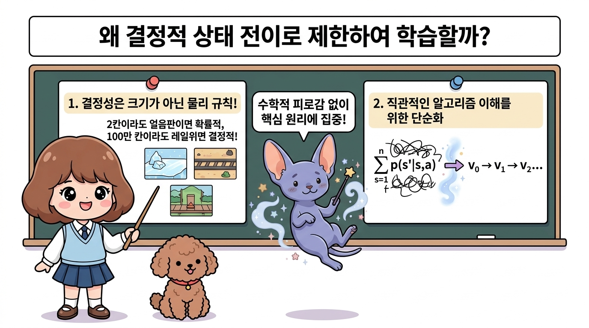
예를 들어, 상태 L1에서 ‘오른쪽’으로 가는 행동을 취하면, 마치 기차가 철로를 따라 달리듯 100% 확률로 반드시 상태 L2에 안착합니다.
주사위(확률)에 따라 다른 엉뚱한 곳으로 빗나가거나 미끄러질 확률이 전혀 없는 상태를 말합니다.
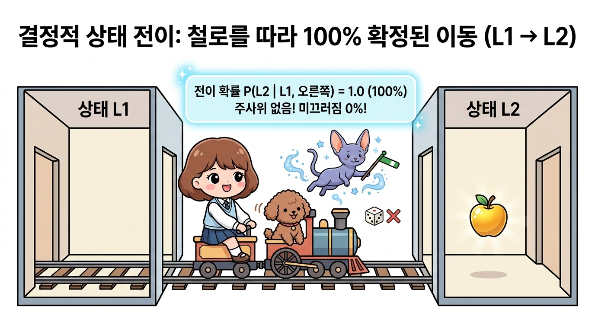
수학적으로는 다음 상태 s’가 확률 분포가 아니라 고정된 함수 s’ = f(s, a)에 의해 단 하나로 고유하게 결정됩니다.
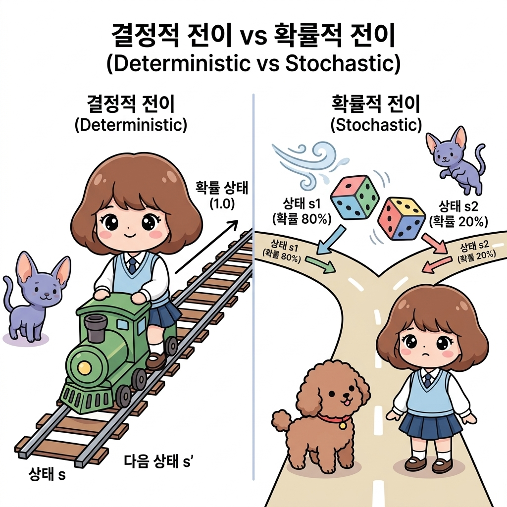
이처럼 다음 상태가 단 하나로 확정되면, 다음 상태 전이 확률인 p(s’ ∣ s, a)의 값은 오직 실제 도착할 s’ = f(s, a)에 대해서만 1이 되고, 나머지 다른 모든 상태에 대해서는 0이 됩니다.
그 결과, 모든 다음 상태에 대해 합산(시그마)을 구하는 수식인 Σs’가 1에 대한 값으로 수축하면서 사라지게 되고, 오직 실제로 도달할 하나의 다음 상태 s’에 대해서만 가치를 평가하게 됩니다.
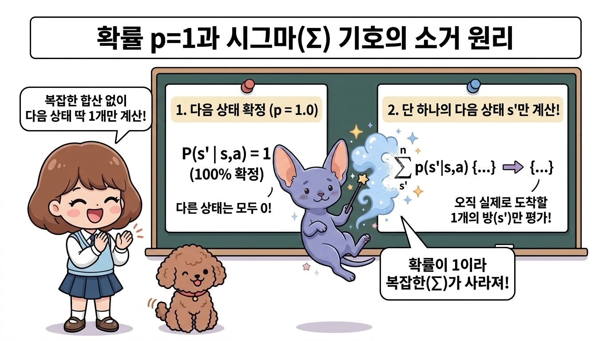
따라서 가치 함수 갱신식인 [식 07.2]를 다음과 같이 단순화할 수 있습니다.
s’ = f(s, a) 일 때
\[V_{k+1}(s) = \sum_a \pi(a \mid s) \{ r(s, a, s') + \gamma V_k(s') \}\][식 07.3]
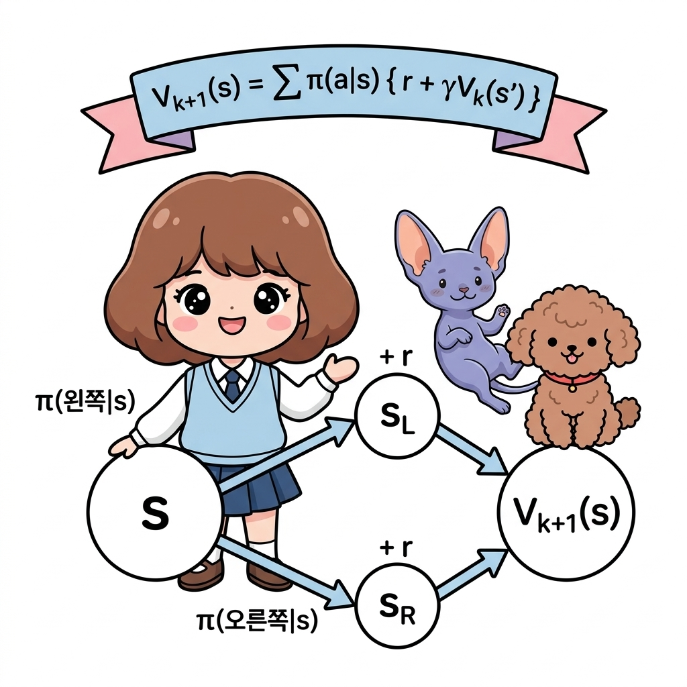
위의 [식 07.3]을 하나씩 쪼개어 해석하면 다음과 같이 매우 직관적입니다.
-
*행동 선택 확률 π(a* s)*: 현재 상태 *s에서 행동 a(예: 왼쪽 혹은 오른쪽)를 선택할 확률입니다. - 단 하나의 확정된 미래 s’: 행동 a를 취했을 때 도달하게 되는 다음 상태 s’가 정확히 1개로 결정되므로, 다음 상태들에 대한 복잡한 가중 합산(Σs’)을 할 필요가 없습니다.
- 행동의 기대 가치 { r + γ Vk(s’) }: 행동 a를 실행하여 얻는 즉각적인 보상 r과 그 목적지인 다음 상태 s’에 적혀있는 이전 버전의 가치 추정치 Vk(s’)를 가져와 할인율 γ를 곱해 더한 값입니다.
- 행동들에 대한 합산 Σa: 각 행동들을 통해 얻는 기대 가치를 행동 선택 확률(π)로 곱해 모두 더해줍니다(가중 평균).
이 과정을 거쳐 갱신된 새로운 가치가 바로 좌변의 현재 상태 가치 Vk+1(s)가 됩니다.
기존의 복잡한 [식 07.2]의 Σa, s’에서 상태 전이가 결정적이라는 제약 조건 덕분에 다음 상태를 찾는 복잡한 통계 확률 연산(Σs’)이 생략되어 식이 매우 명쾌해진 것입니다.
07.2.3.2 2칸짜리 그리드 월드에서의 가치 함수 갱신
이번 문제에서는 [식 07.3]에 따라 가치 함수를 갱신해보겠습니다.
이제 정책 π의 가치 함수를 반복적 정책 평가 알고리즘으로 구해보겠습니다.
우선 초깃값으로 V0(s)를 0으로 설정합니다.
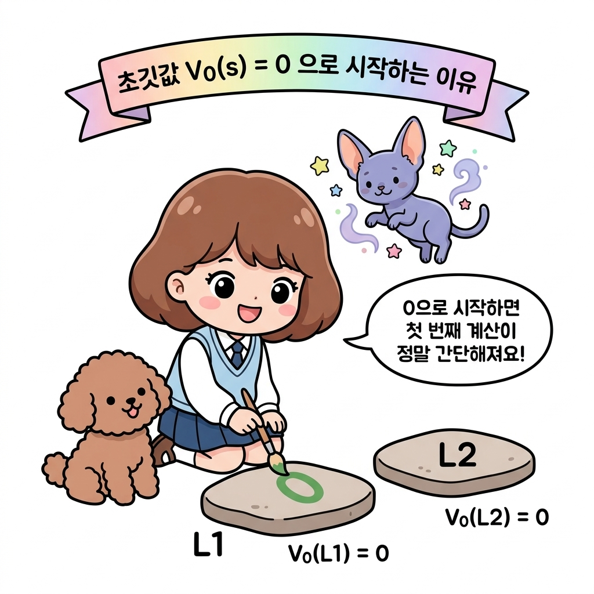
💡 왜 굳이 초깃값(초기화)을 설정하고, 하필 0을 사용하는 걸까요?
- 알고리즘 가동을 위한 출발점: 반복적 정책 평가는 이전 버전의 가치 추정치 Vk(s’)를 우변에 입력하여 새로운 가치 Vk+1(s)를 계산해내는 징검다리식 순환 알고리즘입니다. 따라서 첫 바퀴(k = 0)를 돌리기 위한 기초 출발점 데이터(V0)가 반드시 메모리에 선언되어 있어야만 컴퓨터가 연산을 시작할 수 있습니다.
- 어떤 값으로 시작하든 상관없음 (수렴 보장): 가치 수축 사상 원리에 의해, 초깃값을 100이나 -500으로 아무렇게나 설정해도 연산을 충분히 반복하면 결국에는 동일한 진짜 정답 가치인 vπ로 똑같이 수렴합니다.
- 0의 강력한 수학적 단순함: 0은 계산 과정을 가장 직관적으로 만들어 줍니다. 첫 번째 갱신 과정(V0 → V1)에서 다음 상태의 가치 값들(V0(s’))이 전부 0이 되므로, 할인율 곱셈 연산(γ V0(s’)) 부분이 통째로 날아갑니다. 덕분에 수식을 손으로 직접 계산하여 이해하기가 매우 쉽고 간단해집니다.
두 칸짜리 그리드 월드에서 상태는 두 개뿐이므로 다음과 같이 나타냅니다.
\[\begin{aligned} V_0(L1) &= 0 \\ V_0(L2) &= 0 \end{aligned}\]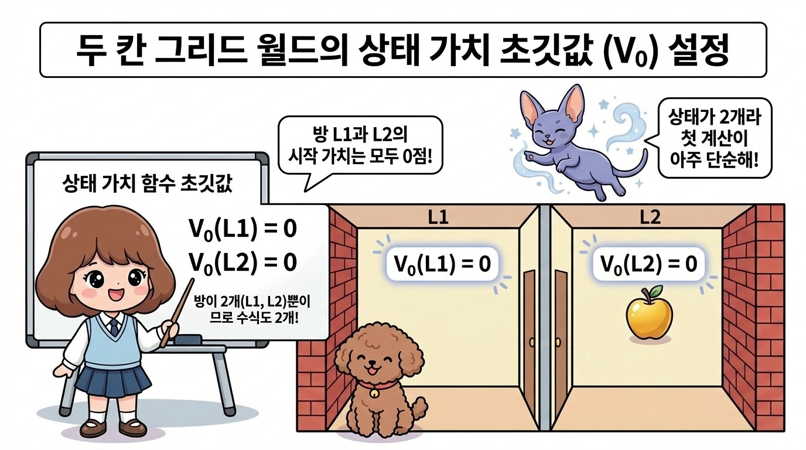
이어서 [식 07.3]에 따라 V0(s)를 갱신합니다.
이제 우리가 정의한 두 칸짜리 그리드 월드에서 상태 가치 함수를 1차 갱신(V0 → V1)하는 전체 과정을 손계산으로 하나씩 풀어보겠습니다.
[그림 07-4]의 백업 다이어그램을 보면 가치 갱신이 어떤 경로를 통해 흘러가는지 한눈에 파악할 수 있습니다.
그림 07-4 상태 L1부터 시작하는 백업 다이어그램
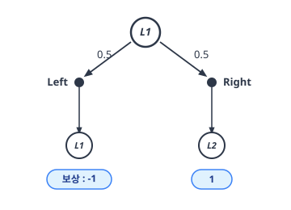
그림과 같이 두 갈래 길로 나뉩니다.
상태 L1에서 출발한 에이전트(도로시)는 균등 무작위 정책(π)에 따라 50%의 확률로 왼쪽, 50%의 확률로 오른쪽을 선택합니다.
먼저 왼쪽 행동을 선택하는 첫 번째 경로를 계산해보겠습니다:
- 상황: 도로시가 왼쪽으로 이동하지만, 단단한 외벽에 가로막혀 쿵! 부딪히며 제자리 L1 상태에 그대로 머무릅니다.
- 즉각 보상: 벽에 부딪혔으므로 외벽 충돌 페널티인 벌점 보상 -1을 받습니다 (r = -1).
- 다음 상태의 가치: 도착한 다음 상태가 여전히 L1이므로, 우변에 대입할 이전 가치는 초깃값 V0(L1) = 0이 됩니다.
- 할인율 적용: 할인율 γ = 0.9를 적용하여 [식 07.3]에 대입합니다.
[그림 07-4]의 또 다른 가능성은 상태 L1에서 오른쪽으로 가는 행동을 선택한 경우입니다.
이번에는 50%의 확률로 오른쪽 행동을 선택하는 두 번째 경로를 계산해보겠습니다:
- 상황: 도로시가 오른쪽 문을 열고 한 걸음 내딛어 옆 칸인 L2 상태로 경쾌하게 전진합니다.
- 즉각 보상: 안전하게 전진하여 L2 방에 도착했으므로 달콤한 황금 사과 보상 +1을 기분 좋게 획득합니다 (r = +1).
- 다음 상태의 가치: 도착한 다음 상태가 L2이므로, 우변에 대입할 이전 가치는 초깃값 V0(L2) = 0이 됩니다.
- 오른쪽 경로의 가치 기여분:
이상으로부터 V1(L1)은 다음과 같이 구할 수 있습니다.
벨만 갱신식에 따라 왼쪽 행동에서 얻은 가치 기여분(-0.5)과 오른쪽 행동에서 얻은 가치 기여분(+0.5)을 확률 가중치로 합산하면, 최종적으로 갱신된 새로운 가치 추정치 V1(L1)이 도출됩니다.
\[\begin{aligned} V_1(L1) &= 0.5 \{ -1 + 0.9 V_0(L1) \} + 0.5 \{ 1 + 0.9 V_0(L2) \} \\ &= 0.5 \cdot (-1 + 0.9 \cdot 0) + 0.5 \cdot (1 + 0.9 \cdot 0) \\ &= -0.5 + 0.5 \\ &= 0 \end{aligned}\]왼쪽 벽에 부딪혀 깎인 점수(-0.5)와 오른쪽 방으로 전진해 얻은 점수(+0.5)가 정확히 상쇄되어, 1차 갱신 후의 가치는 여전히 0을 유지합니다.
같은 방법으로 V1(L2)도 계산할 수 있습니다.
이번에는 에이전트(도로시)가 오른쪽 방인 L2에서 출발하는 경우를 동일한 원리로 손계산해보겠습니다.
- 왼쪽으로 이동하는 경우 (확률 0.5):
- 이전 방인 L1로 후진합니다. 이때 주어지는 보상은 없습니다 (r = 0).
- 왼쪽 경로의 가치 기여분: \(0.5 \times \{ 0 + 0.9 \times V_0(L1) \} = 0.5 \times (0 + 0) = 0\)
- 오른쪽으로 이동하는 경우 (확률 0.5):
- 오른쪽 외벽에 쿵! 부딪혀 제자리 L2에 머무르고 벌점 보상 -1을 받습니다 (r = -1).
- 오른쪽 경로의 가치 기여분: \(0.5 \times \{ -1 + 0.9 \times V_0(L2) \} = 0.5 \times (-1 + 0) = -0.5\)
두 경로의 기여분을 합산한 최종 식은 다음과 같습니다.
\[\begin{aligned} V_1(L2) &= 0.5 \{ 0 + 0.9 V_0(L1) \} + 0.5 \{ -1 + 0.9 V_0(L2) \} \\ &= 0.5 \cdot (0 + 0.9 \cdot 0) + 0.5 \cdot (-1 + 0.9 \cdot 0) \\ &= 0 + (-0.5) \\ &= -0.5 \end{aligned}\]이것으로 두 칸짜리 그리드 월드의 모든 상태(L1, L2)에 대한 1차 가치 함수 갱신이 완료되었습니다!
결과를 정리하면 [그림 07-5]와 같습니다.
모든 상태의 초깃값을 0으로 둔 상태(V0)에서 벨만 갱신식을 1회 적용한 결과(V1)는 다음과 같이 변했습니다:
\[V_0 = \{ L1: 0.0, \; L2: 0.0 \} \quad \longrightarrow \quad V_1 = \{ L1: 0.0, \; L2: -0.5 \}\]그림 07-5 가치 함수 1차 갱신
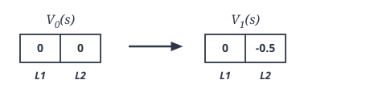
도로시와 지니가 칠판에 적어둔 아래의 요약표를 보면, 복잡해 보이던 수식들이 단지 각 방향의 보상과 확률의 단순한 사칙연산이었음을 명쾌하게 이해할 수 있습니다.
이제부터는 같은 과정을 반복하면 됩니다.
방금 구한 1차 갱신값 V1(s)를 다시 우변에 입력값으로 대입하여 V2(s)를 계산하고, 이어서 V2(s)를 대입해 V3(s)를 계산하는 과정을 징검다리처럼 쉼 없이 반복합니다.
\[V_0(s) \; \longrightarrow \; V_1(s) \; \longrightarrow \; V_2(s) \; \longrightarrow \; V_3(s) \; \dots \; \longrightarrow \; v_\pi(s)\]수축 사상(Contraction Mapping) 원리에 의해, 초깃값을 0이 아닌 100이나 -500으로 아무렇게나 설정했더라도 연산을 거듭할수록 오차가 γ배씩 줄어들어 결국 유일한 진짜 정답 가치 함수인 vπ(s) = [-2.25, -2.75]로 완벽하게 수렴하게 됩니다.
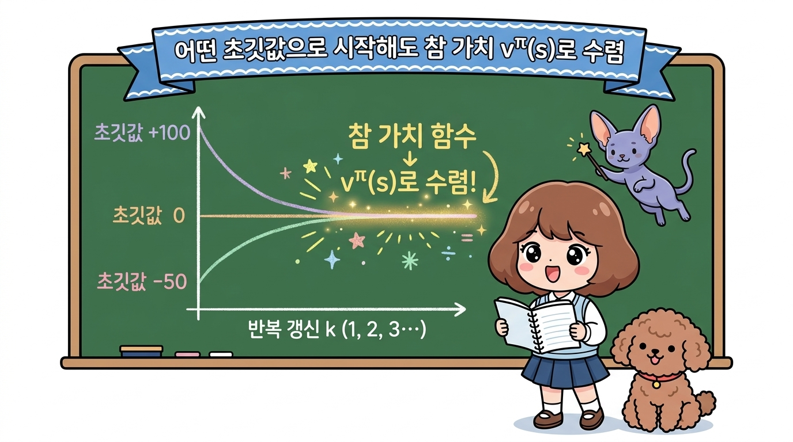
07.2.3.3 파이썬 구현 및 임곗값 설정 실습
손으로 1차 갱신을 풀어보았으니, 이제 컴퓨터 파이썬 코드로 100회 이상의 반복 갱신을 자동으로 시뮬레이션해보겠습니다.
독자 여러분이 직접 코드를 내려받아 실행해볼 수 있도록 독립 실행 파일(dp.py)을 제공합니다:
💾 파이썬 실습 소스 코드 다운로드:
📥 dp.py 다운로드
1. 100회 고정 반복 갱신 코드
가장 먼저 갱신을 정해진 횟수(100회)만큼 단순 무식하게 반복하는 기초 구현입니다.
# ch07/dp.py - 파트 1: 100회 고정 반복
V = {'L1': 0.0, 'L2': 0.0}
new_V = V.copy() # 계산 오염을 방지하기 위한 V의 복사본
for _ in range(100):
# 벨만 갱신식에 따라 새로운 가치 계산
new_V['L1'] = 0.5 * (-1 + 0.9 * V['L1']) + 0.5 * (1 + 0.9 * V['L2'])
new_V['L2'] = 0.5 * (0 + 0.9 * V['L1']) + 0.5 * (-1 + 0.9 * V['L2'])
# 갱신된 새 값을 이전 값에 덮어쓰기 (다음 스텝 준비)
V = new_V.copy()
print(V)
출력 결과
{'L1': 0.0, 'L2': -0.5}
{'L1': -0.22499999999999998, 'L2': -0.725}
{'L1': -0.42749999999999994, 'L2': -0.9274999999999999}
...
{'L1': -2.24999335965027827, 'L2': -2.7499335965027827}
이번 문제는 상태가 두 개뿐이라 각 상태의 가치 함수를 파이썬의 dict 자료형에 간단히 보관했습니다.
그리고 현재 상태의 가치 함수를 V, 새로 갱신할 가치 함수를 new_V라고 했습니다.
이 코드를 실행하면 V가 갱신되는 과정을 실시간으로 확인할 수 있습니다.
참고로 이론적으로 연립방정식을 직접 풀어 구한 진짜 정답 가치 함수의 값은 vπ(L1) = -2.25, vπ(L2) = -2.75입니다. 앞의 출력 결과를 보면 100번째 갱신 시점에서 이론상 참값과 소수점 아래 넷째 자리까지 완벽하게 일치하는 모습을 볼 수 있습니다!
💡 NOTE_ 딕셔너리 복사(
V.copy())가 필수적인 이유
파이썬에서 만약new_V = V라고 단순 대입하면, 두 변수가 컴퓨터 메모리 상의 동일한 객체 주소를 공유하게 됩니다. 그렇게 되면new_V['L1']을 수정하는 순간V['L1']까지 동시에 바뀌어버려, 뒤이어 계산되는new_V['L2']가 이전 값이 아닌 방금 바뀐 엉뚱한 값을 읽어버리는 치명적인 계산 오염이 일어납니다.
따라서 반드시new_V = V.copy()를 호출하여 완전히 독립된 새로운 메모리 공간에 복제본을 만들어 분리해야 합니다.
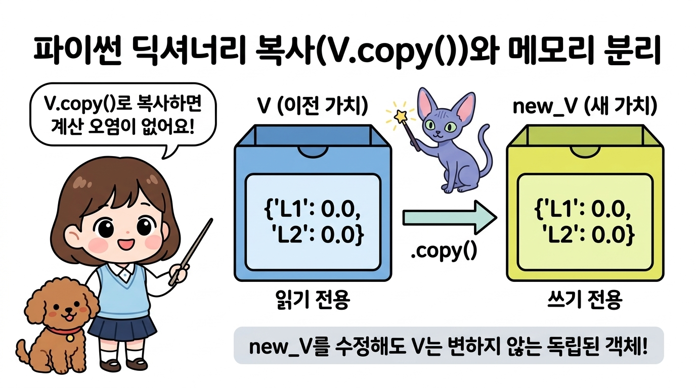
앞 코드에서는 갱신을 정해진 횟수만큼(100회) 진행했습니다.
하지만 실제 문제에서는 정답 가치에 도달하기 위해 몇 번을 돌아야 할지 사전에 알 수 없습니다. 불필요하게 1000번, 1만 번을 돌리면 컴퓨터 자원이 낭비되고, 너무 적게 돌리면 덜 수렴된 오답을 얻게 됩니다.
따라서 가치의 변화량(차이)이 아주 미세해졌을 때 자동으로 멈추는 “임곗값(threshold) 기반 중단 조건”을 도입합니다.
💾 파이썬 실습 소스 코드 다운로드:
📥 dp.py 다운로드
V = {'L1': 0.0, 'L2': 0.0}
new_V = V.copy()
cnt = 0 # 갱신 횟수 카운터
while True:
# 1. 새로운 가치 추정치 계산
new_V['L1'] = 0.5 * (-1 + 0.9 * V['L1']) + 0.5 * (1 + 0.9 * V['L2'])
new_V['L2'] = 0.5 * (0 + 0.9 * V['L1']) + 0.5 * (-1 + 0.9 * V['L2'])
# 2. 이번 단계에서 갱신된 양의 최댓값(delta) 측정
delta = abs(new_V['L1'] - V['L1'])
delta = max(delta, abs(new_V['L2'] - V['L2']))
# 3. 이전 가치를 새 가치로 교체
V = new_V.copy()
cnt += 1
# 4. 수렴 판정: 변화량이 0.0001보다 작아지면 루프 탈출!
if delta < 0.0001: # 임곗값 theta = 0.0001
print("최종 가치 추정치:", V)
print('총 갱신 횟수:', cnt)
break
출력 결과
최종 가치 추정치: {'L1': -2.249167525908671, 'L2': -2.749167525908671}
총 갱신 횟수: 76
임곗값을 0.0001로 설정하고 갱신된 양의 최댓값이 임곗값 밑으로 떨어질 때까지 while 순환문을 반복 실행했습니다.
갱신된 양의 최댓값은 new_V와 V에서 대응하는 원소들 간 차이의 절댓값으로 구합니다.
이번 문제에서는 상태가 2개(L1, L2)뿐이므로 두 원소의 차이의 절댓값 중 더 큰 값을 선택합니다. 그 값이 바로 오차의 지표인 delta(Δ)입니다.
delta가 우리가 설정한 허용 오차 임곗값(θ = 0.0001)보다 작아지면, 더 이상 값을 갱신해도 유의미한 변화가 없다고 판단하여 break로 루프를 깔끔하게 종료합니다.
출력 결과를 보면 정확히 76회 갱신한 끝에 참값([-2.25, -2.75])과 오차 0.0008 수준의 완벽한 근사해에 도달했음을 확인할 수 있습니다.
07.2.4 반복적 정책 평가 구현 (2) - 덮어쓰기 방식
앞선 07.2.3절에서는 반복적 정책 평가 알고리즘을 구현하기 위해 두 개의 딕셔너리를 사용했습니다.
하나는 현재의 이전 가치 함수를 보관하는 읽기 전용 V, 다른 하나는 새롭게 계산된 가치 함수를 임시로 받아 적는 쓰기 전용 new_V입니다.
👧 도로시: “지니! 공책 두 개(
V,new_V)를 번갈아 펼쳐놓고 옮겨 적는 게 은근히 손도 많이 가고 번거로워. 공책 하나만 써서 바로바로 지우개로 지우고 새 값을 쓰면 안 될까?”🐱 지니: “후후, 정말 날카로운 관찰이야 도로시! 바로 그게 컴퓨터 과학과 강화학습에서 가장 사랑받는 ‘제자리 덮어쓰기(In-place Update)’ 비법이란다. 공책을 절반만 써서 메모리도 아끼고, 방금 계산한 따끈따끈한 최신 정보를 곧바로 다음 방 계산에 활용하니 계산 속도도 훨씬 빨라지지!”
🐶 토토: “공책 하나로 쓱싹쓱싹! 더 가볍고 빠르게 달린다, 멍멍! 🐾”
이 두 딕셔너리를 사용하여 [그림 07-6]과 같이 가치 함수를 갱신했습니다.
그림 07-6 2개 딕셔너리를 사용한 완전 동기 갱신 방법
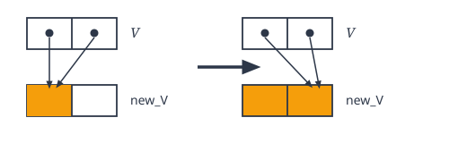
[그림 07-6]에서 주목할 점은 new_V의 각 원소를 계산할 때, 언제나 오직 이전 단계 시점의 V라는 딕셔너리 값만을 참조하고 있다는 점입니다.
이 방식은 수학적인 벨만 갱신식 정의(Vk+1을 계산할 때 우변에 오직 Vk만을 대입)에 가장 충실한 정석적인 방법이지만, “방금 갱신된 따끈따끈한 최신 가치 정보를 다음 방을 계산할 때 곧바로 써먹지 못하고 다음 바퀴까지 기다려야 한다”는 아쉬운 점이 있습니다.
다르게 구현할 수도 있습니다.
바로 딕셔너리를 2개로 쪼개지 않고, 단 하나만 선언한 뒤 계산이 끝나는 즉시 그 자리에서 값을 ‘덮어쓰는(In-place)’ 방법입니다.
그림으로 표현하면 다음과 같습니다.
그림 07-7 덮어쓰기(In-place) 갱신 방식
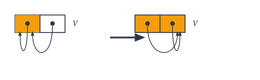
새로운 방식에서는 V 하나만 사용하여 각 원소를 즉시 덮어씁니다. 이를 ‘덮어쓰기 방식(In-place Method)’이라고 부릅니다.
💡 NOTE_ 덮어쓰기 방식이 더 빠른 이유
두 방식 모두 무한히 반복하면 동일한 정답 가치 함수로 수렴한다는 사실이 수학적으로 증명되어 있습니다.
하지만 ‘덮어쓰기 방식’이 실전에서 대체로 훨씬 더 빠릅니다. 갱신한 최신 원소를 그 다음 원소를 계산할 때 ‘즉시 재활용’하기 때문입니다.
예를 들어 [그림 07-7]에서는 왼쪽 L1의 ‘이미 갱신된 최신 값’을 곧바로 사용하여 오른쪽 L2의 가치를 계산하므로, 가치의 전파 속도가 비약적으로 빨라집니다.
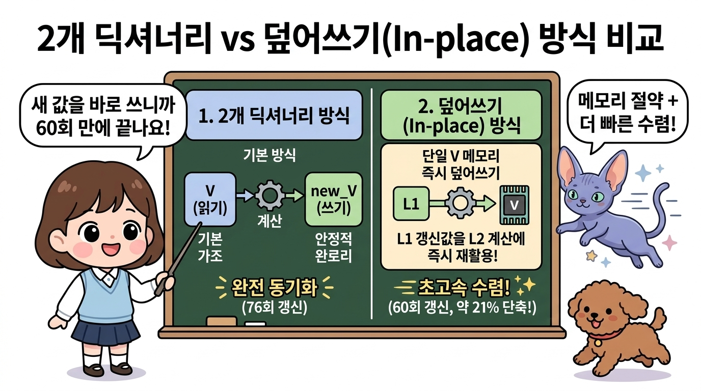
07.2.4.1 덮어쓰기 방식(In-place) 파이썬 구현
이제 DP를 ‘덮어쓰기 방식’으로 구현해봅시다.
독자 여러분이 직접 코드를 내려받아 실행해보고 이전 방식과 속도를 비교해볼 수 있도록 독립 실행 파일(dp_inplace.py)을 제공합니다:
💾 파이썬 실습 소스 코드 다운로드:
📥 dp_inplace.py 다운로드
V = {'L1': 0.0, 'L2': 0.0}
cnt = 0
while True:
# 1. 상태 L1 갱신 (계산 즉시 V['L1']에 덮어씀)
t = 0.5 * (-1 + 0.9 * V['L1']) + 0.5 * (1 + 0.9 * V['L2'])
delta = abs(t - V['L1'])
V['L1'] = t
# 2. 상태 L2 갱신 (방금 갱신된 새로운 V['L1'] 값을 '즉시' 대입하여 계산!)
t = 0.5 * (0 + 0.9 * V['L1']) + 0.5 * (-1 + 0.9 * V['L2'])
delta = max(delta, abs(t - V['L2']))
V['L2'] = t
cnt += 1
# 수렴 판정
if delta < 0.0001:
print("최종 가치 추정치:", V)
print('총 갱신 횟수:', cnt)
break
출력 결과
최종 가치 추정치: {'L1': -2.2493782177156936, 'L2': -2.7494201578106514}
총 갱신 횟수: 60
이번에는 별도의 new_V 없이 오직 딕셔너리 V 하나만 사용하여 계산된 원소들을 즉시 덮어썼습니다.
결과를 보면 갱신은 60회 만에 끝났습니다! 이전 2개 딕셔너리 방식에서는 76회였으니, 갱신 횟수가 무려 16회(약 21%)나 단축되었네요.
메모리 공간도 절약되고 수렴 속도도 훨씬 빠르기 때문에, 앞으로 우리가 다룰 모든 강화학습 동적 프로그래밍 알고리즘에서는 이 효율적인 ‘덮어쓰기 방식(In-place)’을 표준으로 채택하여 구현해 나갈 것입니다!
07.2.5 학습 정리
👧 도로시: “지니! 복잡해 보이던 연립방정식을 직접 풀지 않고도, 0에서 출발해서 벨만 갱신식과 덮어쓰기 방식으로 참값([-2.25, -2.75])을 컴퓨터로 척척 찾아내는 과정이 정말 마법처럼 신기했어!”
🐱 지니: “후후, 대견하구나 도로시! ‘현재의 어림셈을 이용해 다음 어림셈을 계산하는’ 부트스트랩과 동적 프로그래밍의 강력한 수축 사상 원리를 완벽하게 마스터한 덕분이란다. 이제 주어진 정책을 평가할 줄 알게 되었으니, 다음 절에서는 더 좋은 정책을 스스로 찾아 나서는 ‘정책 개선’과 ‘정책 반복법’의 신나는 모험을 떠나보자!”
🐶 토토: “정책 평가 정복 완료! 다음 보물 찾으러 가자, 멍멍! 🐾”
그림 07-8 07.2절 동적 프로그래밍과 정책 평가의 핵심 원리를 완벽하게 정복하고 수료증을 자랑하는 도로시와 지니, 토토
- 반복적 정책 평가의 핵심 원리:
- 연립방정식을 한 번에 풀지 않고, 벨만 방정식을 반복 갱신 규칙(Update Rule)으로 변환하여 가치 함수를 단계별로 다듬어 나가는 알고리즘입니다.
- 수학적 수축 사상(Contraction Mapping) 원리에 의해, 초깃값을 어떤 값(V0 = 0 등)으로 설정하더라도 충분히 반복하면 언제나 유일한 참 가치 함수 vπ(s)로 반드시 수렴합니다.
- 부트스트랩(Bootstrapping) 메커니즘:
- 다음 상태의 가치 추정치(V(s’))를 우변의 입력으로 대입하여 현재 상태의 새로운 가치 추정치(V(s))를 계산하는 순환적 갱신 방식입니다.
- 실제 환경을 무한히 끝까지 시뮬레이션하지 않고도, 단 한 걸음 앞의 가치를 이용해 효율적으로 학습할 수 있습니다.
- 임곗값(θ) 기반의 자동 종료 판정:
-
고정된 횟수(예: 100회) 동안 무작정 반복하는 대신, 이전 가치와 새 가치 간의 최대 변화량인 오차 지표 δ = max( new_V(s) - V(s) )를 실시간으로 측정합니다. - δ < θ (예: 0.0001) 조건을 만족하는 순간 루프를 스스로 탈출함으로써 불필요한 계산 낭비를 막고 76회 만에 스마트하게 수렴을 완료합니다.
-
- 제자리 덮어쓰기(In-place) 방식의 압도적 효율성:
- 읽기용
V와 쓰기용new_V를 분리하는 정석적 2개 딕셔너리 동기 방식 대신, 단 하나의 딕셔너리V에 계산 즉시 값을 덮어쓰는 기법입니다. - 방금 계산된 최신 가치 정보를 다음 상태 계산에 지체 없이 즉각 재활용하므로, 수렴 횟수가 76회에서 60회로 약 21% 단축되고 메모리 사용량도 절반으로 절감되어 실전 강화학습의 표준 기법으로 널리 쓰입니다.
- 읽기용